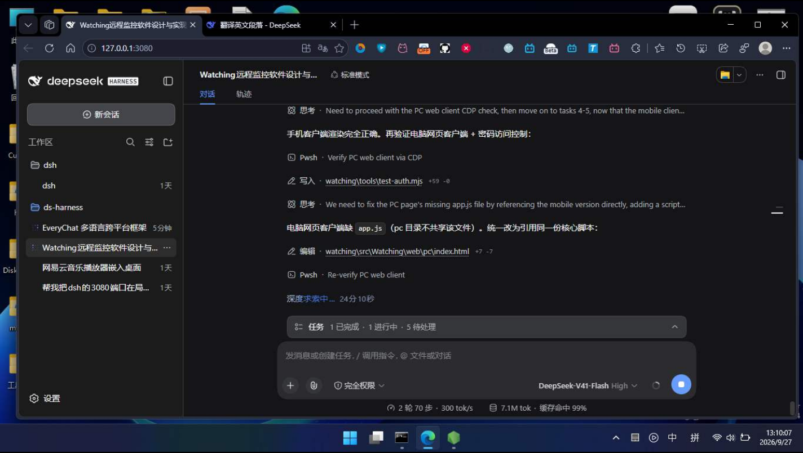
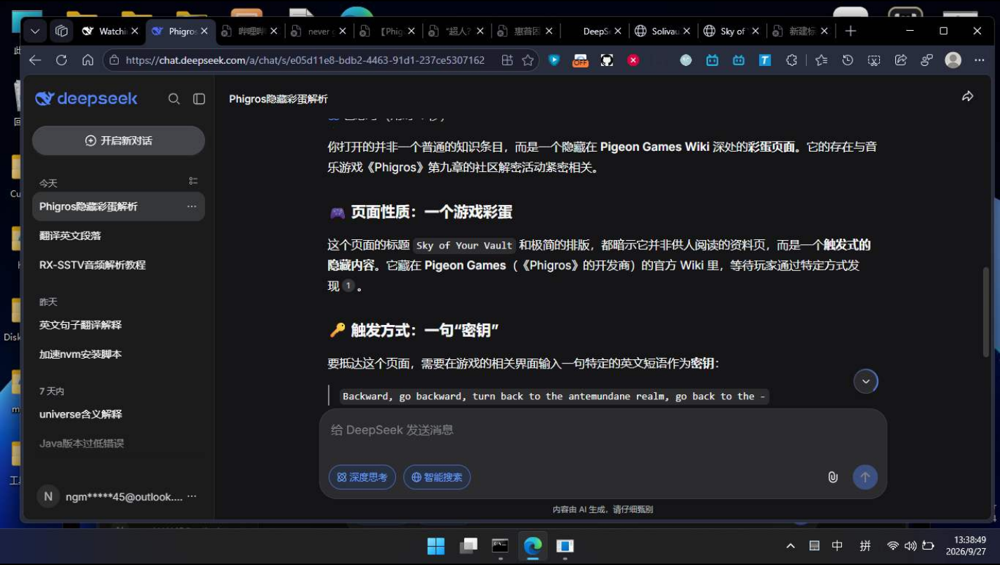

Watching 是一个自己写的局域网看屏工具。被看的电脑跑一个完全静默的服务端（没有窗口，只有托盘小图标）， 手机装个 App、或者另一台电脑打开客户端、或者直接用浏览器输 IP —— 就能实时看到它的屏幕。 不经过任何服务器，不上传任何数据。
服务端抓屏 → 编码成 JPEG → 通过内置 WebSocket 推给各客户端。只有 IP 和端口，没有账号、没有中转服务器。
Watching.exe --serverWatching.exe --client · F11 全屏 · Ctrl+滚轮缩放http://IP:8899/ · iPhone 也能用没有查看端时抓屏线程直接退出，服务端回到 0 CPU，也不会占内存。
慢的客户端只会掉帧，服务端不会堆积数据，所以永远不会越看越卡。
每个客户端可独立选 流畅 / 中 / 高清，互不影响，还能只传屏幕的一块区域。
设置界面要密码（PBKDF2 哈希）＋ 客户端连接可选访问密码，双层保护。
服务端只有一个，查看端随便挑，同时连多个也没问题。
真正的原生 APK，C# 写的 .NET for Android 应用，不是网页套壳。
adb install，不用应用商店WPF 桌面程序，和服务端共用一个 Watching.exe，用参数切换角色。
服务端内置的网页（编译进 exe 里），打开浏览器就能看，什么都不用装。
http://IP:8899/?ip=IP&port=8899该有的都有，不该有的（云端、账号、依赖）都没有。
没有窗口、没有任务栏图标，只有托盘一个小图标；被截取的画面里不会出现自己。退出请右键托盘。
32bpp 位图缓冲做 BitBlt，复用位图与编码参数，实测 12–20 fps（虚拟机软件渲染）。
协议支持只传屏幕的一块区域，看文档时只推那一块，流量能省一大截。
开启后可远程操作鼠标键盘（SendInput 注入），需要服务端本人设置密码并二次验证。
写入当前用户启动项，无需管理员权限；开机静默待命，手机随时连。
界面里可直接看运行日志；附带网络诊断脚本，一键排查 IP、端口、防火墙问题。
HTTP 服务器、WebSocket（RFC6455）、抓屏编码全部自己实现，没有任何 NuGet 包。
设置密码用 PBKDF2-SHA256（12 万次迭代 + 随机盐）存哈希，恒定时间比较，不保存明文。
装好就是「只能看」。想被操作必须被看的那台电脑自己打开开关 —— 安全默认值。
下面都是真实运行截图：网页/App 显示的就是服务端那一刻的桌面。


docs/screenshots/ 里的图片换成你自己的实拍图效果更好 ——
建议放 desktop-client.png（电脑客户端）、web-mobile.png（手机）、
以及安卓 App 的真机截图。README 里也用到了这些图。
假设 A 是被看的电脑，B 是你手上的手机或另一台电脑，两者连同一个 WiFi。
解压 Watching-win-x64-selfcontained.zip，双击 shortcuts\1-启动服务端.bat，或者命令行：
Watching.exe --server双击 shortcuts\2-启动电脑客户端.bat 输入 A 的 IP，或者：
Watching.exe --client --connect 192.168.1.8装 APK（WatchingMobile-1.0.0.apk），App 里填 A 的 IP；懒得装就用浏览器打开：
http://192.168.1.8:8899/托盘图标右键 → 设置…：第一次没有密码可以直接进，进去后建议立刻设一个； 之后每次进设置都要输密码。还能在这里开启「客户端连接需要访问密码」和「开机自动启动」。
需要远程操作才打开「允许客户端远程控制」—— 默认是关的，出厂只读。
不是要取代谁，只是把「局域网内看一眼另一台电脑」这件事做到最简单。
| 能力 | Watching | 远程桌面（RDP） | 第三方投屏 App |
|---|---|---|---|
| 服务端是否可见 | 完全静默（仅托盘） | 会锁屏 / 占用会话 | 通常有窗口 |
| 手机免安装 | 支持，浏览器直接看 | 需装客户端 | 需装 App |
| 是否经过云端 | 完全不经过 | 不经过 | 多数要登录/中转 |
| 依赖 | 零第三方库 | 系统组件 | 运行时 + 账号 |
| 默认可否操作对方 | 否（只读） | 是（可操作） | 多数可操作 |
| 端口 | 8899（可改） | 3389 | 各家不同 |
shortcuts\5-网络诊断.bat，它会检查监听状态、本机 IP、防火墙规则。shortcuts\4-添加防火墙规则.bat 放行 8899 端口。托盘图标右键，菜单里会直接列出手机可访问的地址；或者运行 shortcuts\3-查看手机访问地址.bat。
形如 192.168.x.x 或 10.x.x.x，注意别用 127.0.0.1（那是本机回环，手机连不上）。
这是正常状态，默认只能看不能操作。需要操作时在服务端托盘右键 → 设置 → 打开「允许客户端远程控制」，要先设置密码并验证一次。
故意的。退出方式：托盘图标右键 → 退出服务端。托盘图标被折叠的话，点任务栏的 ^ 展开隐藏图标区。
可以，但要自己打通网络：路由器上把 8899 做端口转发（强烈建议同时开启客户端访问密码）， 或者用 ZeroTier / Tailscale / WireGuard 之类把两端放进同一个虚拟局域网。Watching 本身不提供中转服务器。
关掉服务端，编辑 %AppData%\Watching\config.json，删掉 PasswordHash 和 PasswordSalt 两行，
下次进入设置就不需要密码了。
需要 .NET SDK 10（Windows 端）、JDK 17 + Android SDK 36（安卓端）。
git clone __REPO__
cd watching
# 自包含版（自带运行时）
powershell -ExecutionPolicy Bypass -File .\build-release.ps1
# 轻量版（需目标机装 .NET 10 桌面运行时）
powershell -ExecutionPolicy Bypass -File .\build-release.ps1 -FrameworkDependent# 首次需要工作负载
dotnet workload install android
# 编译（SDK / JDK 路径可传参覆盖）
powershell -ExecutionPolicy Bypass -File .\build-apk.ps1 `
-SdkDir "D:\android-sdk" -JdkDir "C:\jdk-17"
# 安装到手机
adb install -r dist\apk\WatchingMobile-1.0.0.apk